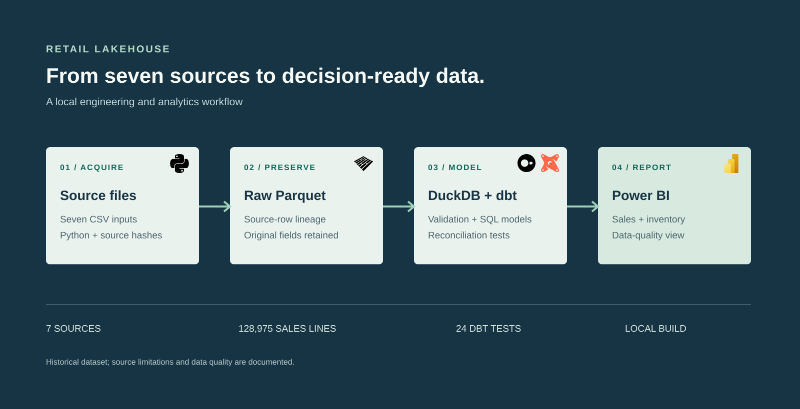

01 / RETAIL ANALYTICS ENGINEERING
Working local buildRetail Lakehouse
Transform seven e-commerce source files into validated sales, inventory and data-quality outputs for business reporting.
Python / Parquet / DuckDB / dbt / Power BI
Read the case study